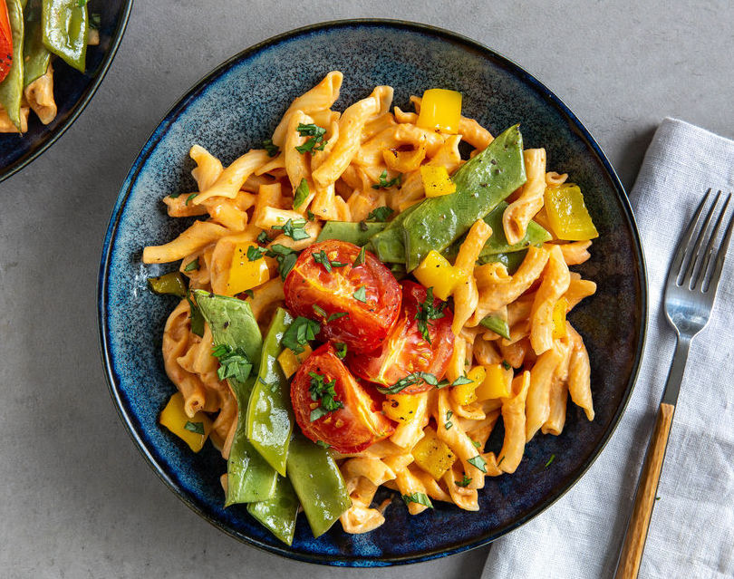

Ingredienser:
- 300 g pasta
- 1 dåse hakkede tomater
- 2 fed hvidløg
- 1 gulerod
- 1 squash eller anden grøntsag efter smag
- Olie til stegning
- Salt, peber og tørret oregano/basilikum
Fremgangsmåde:
Kog pastaen efter anvisningerne. Hak løg, hvidløg og gulerod, og steg dem i lidt olie. Tilsæt de hakkede tomater og lad det simre. Skær squashen i tern og tilsæt den til saucen. Smag til med salt, peber og krydderier. Server med pasta.
